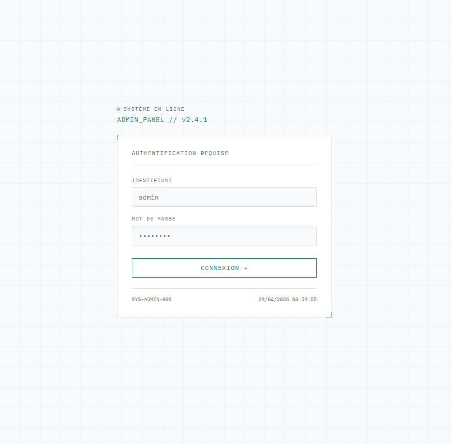
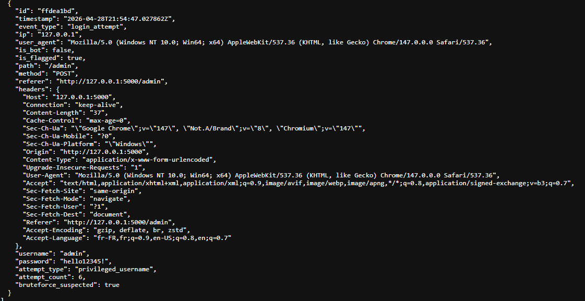
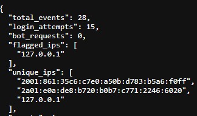

Captures

Logs de connexion Analyse des IPs
Analyse des IPs

Dashboard des tentativesContexte
Dans le cadre de mon apprentissage en autonomie, j'ai réalisée un projet de cybersécurité orienté détection d'intrusion : un honeypot, littéralement un "pot de miel". Il s'agit d'un système volontairement exposé sur le réseau, conçu pour attirer et observer les tentatives d'attaques automatisées ou humaines, sans mettre en danger une infrastructure réelle.
Objectifs
Le projet avait pour but de comprendre les mécanismes d'attaque courants (scans de ports, tentatives de connexion SSH par force brute, injection de commandes) en les observant en conditions réelles. L'enjeu était de collecter des données sur les comportements malveillants et d'en produire une analyse.
Ma mission
J'ai conçue et déployée un serveur leurre simulant des services vulnérables (SSH, HTTP). J'ai développé en Python un système de journalisation des tentatives de connexion, puis analysé les logs collectés pour identifier les patterns d'attaque : origines géographiques, identifiants testés, fréquences et horaires des tentatives.
Fonctionnement
Le honeypot repose sur un service SSH factice écoutant sur le port standard. Chaque tentative de connexion est interceptée, horodatée et enregistrée dans un fichier de logs structuré. Un script Python analyse ensuite ces données pour produire des statistiques : nombre de tentatives par IP, mots de passe les plus fréquemment utilisés, distribution temporelle des attaques.
Ce que j'ai appris
Ce projet m'a permis de comprendre comment fonctionnent les attaques par force brute et les scans automatisés à grande échelle. J'ai renforcé mes compétences en scripting Python (grâce à la lecture de documentation et la recherche de solutions sur des forums et des contenus en ligne), en manipulation de fichiers de logs et en lecture de données réseau. C'est également ma première expérience pratique en sécurité défensive et en analyse de menaces, ce qui m'a donné une perspective précieuse sur les défis de la cybersécurité.